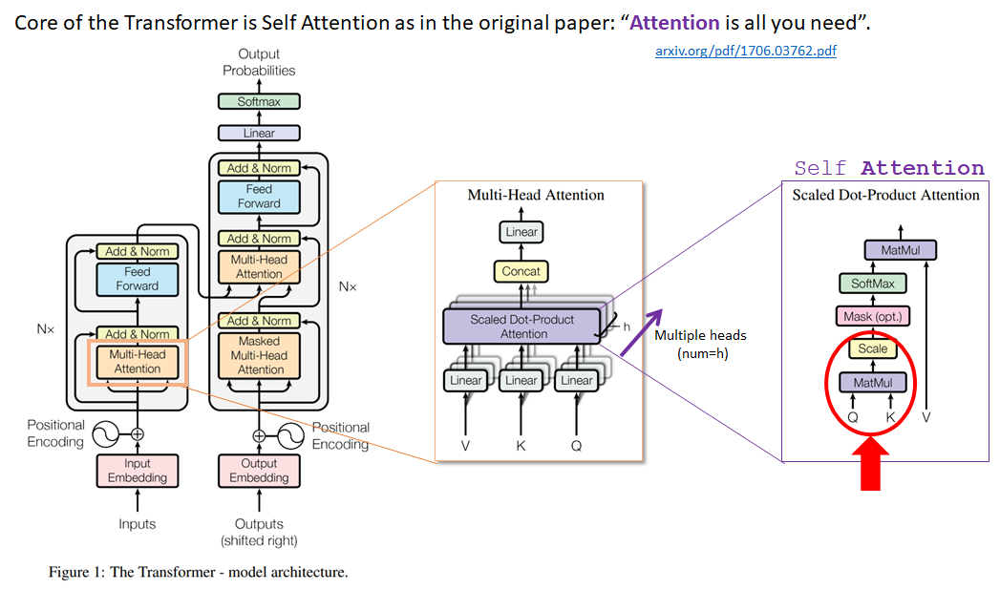
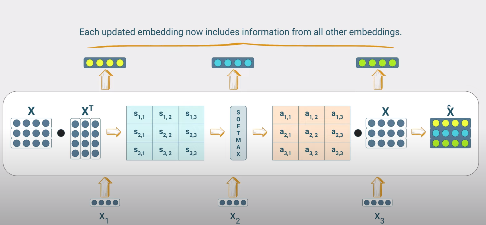
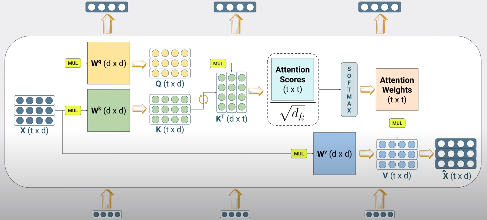
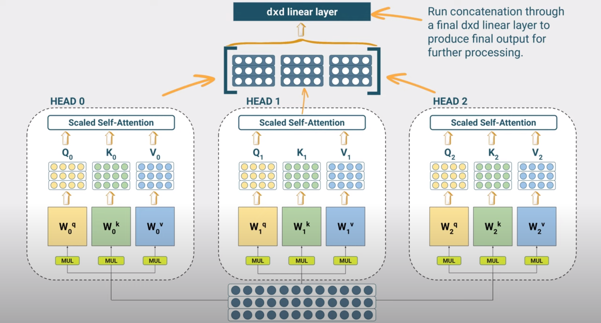

Introduction to Transformers#
Note
To fully underastand the Transformer architecture, we need to understand the following concepts:
Fully Connected and Recurrent Neural Networks (RNNs)
Tokenization
Embeddings
Attention Mechanisms
All such concepts were covered in earlier chapters.

In the transformer architecture we
Eliminate all recurrent connections, therefore allowing the model to be trained and produce inference results much faster.
Continue to use attention mechanisms to allow the model to focus on the most relevant parts of the input sequence.
This means that the encoder output will be a weighted sum of all inputs (all words of the sequence), where the weights are computed by an attention mechanism called self-attention. The name indicates that the encoder will attend to itself, i.e. it will compute the weights based on the input sequence itself.
At a very high level, we will introduce an attention layer that for each input token will reveal predicates that connect these input words to all others. Such connectivity will be manifested by calculating a set of weights as shown in the figure below.

Simple self-attention layer explained#

The self-attention mechanism is a mechanism that allows the model to focus on the most relevant parts of the input sequence. Given the \(i-th\) input word having embedding \(x_i\), we perform the following calculations:
Attention scores of the input word: These are computed as dot products of the embedding of the input word and each of the embeddings of the words of the input sentence (including the input word itself). For example if the input sequence consists of 3 words, we will compute 3 attention scores.
Attention weights: The attention scores are then passed through a softmax function to obtain the corresponding attention weights. Recall that the softmax function is a vector input - vector output function that maps the input vector to a vector of values between 0 and 1, where the sum of all values is 1. So we expect to get 3 attention weights.
Weighted embedding of the input word : We then use the attention weights to create a weighted sum of the word embeddings of the input sequence to obtain the new input word embedding i.e. the embedding that now includes information from all other embeddings of the input sequence.
where \(\alpha_{ij}\) is the attention weight of the \(j-th\) word of the input sequence for the \(i-th\) word of the input sequence.
Self-attention layers can be stacked on top of each other to create a multi-layer self-attention mechanism.
Scaled dot product self-attention layer explained#
In the simple attention mechanism we have no trainable parameters. The attention weights are computed derministically from the embeddings of each word of the input sequence. The way to introduce trainable parameters is via the reuse of the principles we have seen in RNN attention mechanisms.
Information Retrieval
Lets review some terminology used in information retrieval. Lets assume that you are searching for a movie in Netflix. The index is a list of all the movies in the database and for
Term |
Definition |
|---|---|
Query |
The text you enter in search bar. |
Keys |
Netflix has catalogued all the movies in its database and has created an indexed table of all the movies. Indexing may use one of more keys to accelerate the matching/search. Each moview is associated with a list of all the words that appear in the movie’s description. |
Values |
The list of movies that best match your query text. |
In RNN encoder-decoder architecture, the current decoder state served as a query and the encoder states \(h_i\) serve as keys and the contents of the hidden state as values. The attention weights are computed by comparing the query against each of the keys and passing the results via a softmax. The values are then used to create a weighted sum of the encoder hidden states to obtain the new decoder state ie. a vector that incorporates all the encoder hidden states.
In the transformer architecture we do something similar.
Linear transformation of the input embeddings: First we need to create the query, keys and values. To do so, we apply a linear transformation to the input embeddings to obtain new embeddings. This is done by multiplying the input embeddings with a corresdonding matrix \(W\) and adding a bias vector \(b\).
We then compute the attention scores by computing the dot product of the query and each of the keys. We then divide the result by the square root of the dimension of the key vector. This is done to prevent the attention scores from growing too large.
We then pass the attention scores through a softmax function to obtain the attention weights.
We then use the attention weights to create a weighted sum of the values to obtain the new input embedding.
Notice that steps 2-4 are identical to the simple soft attention.

The equation for the attention is as follows:
where Q, K, V are the query, keys and values respectively. \(d_k\) is the dimension of the key vector.
Multi-head attention explained#
For the input sentence
“I usually go to the lab to run my experiments and to meet my collualgues.””
we understand that multiple relationships must be understood with respect to the noun “lab”. For example, we need to understand that “lab” is a place where experiments are run, but also a place where we meet our colleagues.
To capture such multiplicity of relationships, we can use multiple attention heads. Each attention head will learn a different relationship between the input words and will do so at the same time (in parallel).

The complexity of running multiple heads does not scale with the number of heads since the number of parameters is shared across the heads.
Positional embeddings explained#
In the RNN encoder-decoder architecture, the order of the words in the input sequence was important. The decoder state at time step \(t\) was a function of the decoder state at time step \(t-1\) and the input word at time step \(t\). In transformers, since we got rid of the recurring connections, we need to capture the order of the words in the input sequence with some other way. To do so, we use positional embeddings 1.
See here for an explanation of positional embeddings.
Resources#
An interesting video for the many attention mechanisms that are the roots of self-attention found in transformers.
- 1
Positional embeddings have replaced the so called positional encodings of earlier architectures.